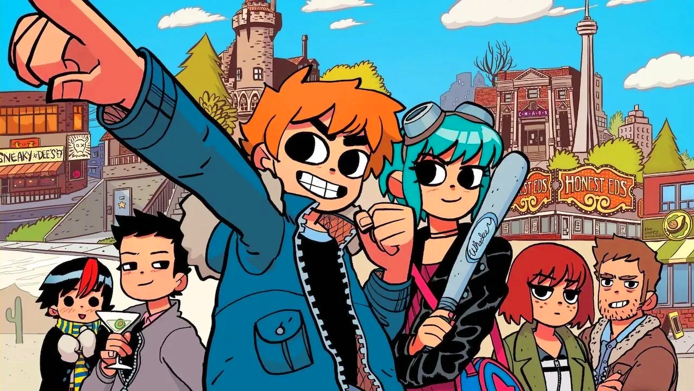

Scott Pilgrim

Scott Pilgrim is a comic book series turned movie, turned video game, turned Netflix animated TV show written by Bryan Lee O'Malley. The series stars the titular character Scott Pilgrim and his quest to date a girl that he saw in a dream one time. Yes it is as weird as it sounds. To date this girl, named Ramona Flowers, he has to defeat The League of 7 Evil Exs who are the 7 most evil people that Ramona has dated throughout her life. This serves as the driving force keeping the plot moving forward, even when the characters don't want it to.
All of the books take place in Toronto, Canada and detail the life of Scott Pilgrim. Scott is characterized throughout the series as a luzy bum who has no real aspirations in life. He only really thinks about where he is going to get his next meal and when he can play his bass guitar next. He is in a band but it is not really going anywhere. The easiest way to describe Scott is a loveable idiot.
The comic book is broken into 6 books each loosly starring one of the 7 evil Exs.The books and their main plot points are as followed:
-
Scott Pilgrim's Precious Little Life
- Scott is introduced and is currently in a relationship with a highschooler
- Scott meets Ramona then goes on a date with her
- Scott fights the first Evil Ex -Matthew Patel-
-
Scott Pilgrim VS. The World
- Scott breaks up with his fake highschool girlfriend
- Scott goes on a second date with Ramona
- Scott gets the League of Evil Exs explained to him
- Scott fights Evil Ex 2 -Lucas Lee-
- Scott's Ex, Envy Adams, is back in town and wants him and his band to come to her concert (she is a masive rock star)
- Scot goes to the concert and find out that his Ex is dating Ramona's Evil Ex number 3 -Todd Ingram-
-
Scott Pilgrim & The Infinite Sadness
- Scott finished the concert and gets invited backstage to chat
- Scott starts to fight Todd but after they start they postpone the fight to the next day
- The next day they shift the fight to something that more resembles a competition, the rules are never explained
- The competition has no clear winner
- At a different unrelated concert that both Scott and Envy attend it is dicovered that Todd is cheating on Envy
- Envy Beats up Todd
-
Scott Pilgrim Gets it Together
- Scott's old friend Lisa is back in town and that sturs things up in Scott and Ramona's relationship
- Scott gets a job
- Scott moves in with Ramona
- Scott flights Evil Ex 4 -Roxane Richter-
-
Scott Pilgrim VS. The Universe
- Scott goes to a party hosted by one of his friends and discovers that the next 2 Evil Exs are there -(Ken and Kyle) The Katayanagi Twins-
- Scott gets beated up by their robots while Ramona vents out some of her frusterations with Scott to a friend
- Tensions grow between Scott and Ramona as some relizations are made
- Scott goes to save one of his friends from a cage that the Twins put her in
- Scott defeats the Twins
- When Scott gets back from saving his friend Ramona is in the process of like teleporting away
- Scott is left alone and goes to talk to one of his friends but forgets his keys and gets locked out
- One of Scott's friends moves back home
- After some time Scott moves into a new appartment
- Scott gets a call from the final Evil Ex -Gideon Graves- the owner of several record labels
-
Scott Pilgrim's Finest Hour
- Scott gives up on life for a while and doesn't really do anything other than play on his Playstaion Protable
- Gideon opens a club in Toronto
- Scott visits his parents on Wilderness Sabbatical to clense his mind
- Scott fights himself? -NegaScott-
- Scott beats NegaScott and regains his memories reinvigorates his drive in life
- Scott returns to Toronto to defeat Gideon and reclaim Ramona
- In the Evil Villian Monologue before Gideo fights Scott it comes out that Ramona is not with either of them
- Gideo kills Scott
- In Scott's head before he dies for real Ramona returns to him
- Ramona explains that she too went on a Wilderness Sabbatical to recenter herself and that is where she has been this whole time (a long time)
- Scott revives and Ramona pops out of his head to aid him in the fight againt Gideon
- Literally so much happens over the next like 10 pages I dont have any idea how to convey what happens
- Scott and Ramona defeat Gideon and live happly ever after
So that is the main plot points of the entire Scott Pilgrim Series. I know that I just spoiled the entire thing but still go out and read it, you will not regret it, it's seriously so funny.